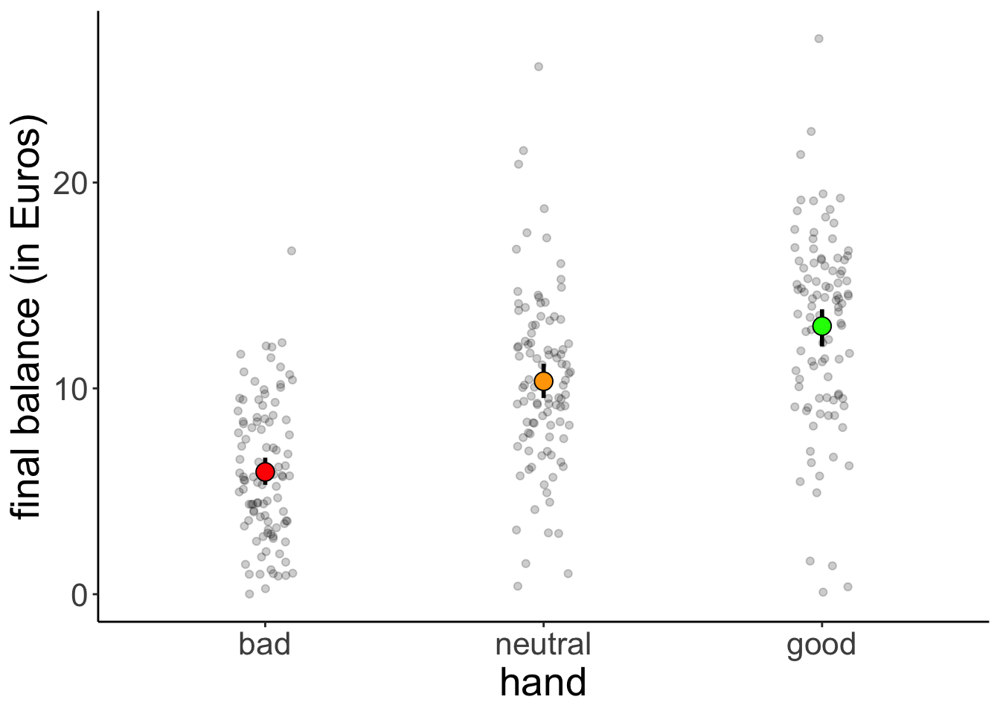

Chapter 11 Contrasts
11.1 Learning goals
- Linear model with one multi-level categorical predictor (One-way ANOVA).
- Linear model with multiple categorical predictors (N-way ANOVA).
11.2 Load packages and set plotting theme
library("knitr") # for knitting RMarkdown
library("kableExtra") # for making nice tables
library("janitor") # for cleaning column names
library("broom") # for tidying up linear models
library("car") # for running ANOVAs
library("afex") # also for running ANOVAs## Warning: package 'lme4' was built under R version 4.3.1## Warning: package 'Matrix' was built under R version 4.3.1## Warning: package 'emmeans' was built under R version 4.3.1## Warning: package 'ggplot2' was built under R version 4.3.1## Warning: package 'dplyr' was built under R version 4.3.111.3 Load data sets
df.poker = read_csv("data/poker.csv") %>%
mutate(skill = factor(skill,
levels = 1:2,
labels = c("expert", "average")),
skill = fct_relevel(skill, "average", "expert"),
hand = factor(hand,
levels = 1:3,
labels = c("bad", "neutral", "good")),
limit = factor(limit,
levels = 1:2,
labels = c("fixed", "none")),
participant = 1:n()) %>%
select(participant, everything())Selection of the data:
df.poker %>%
group_by(skill, hand, limit) %>%
filter(row_number() < 3) %>%
head(10) %>%
kable(digits = 2) %>%
kable_styling(bootstrap_options = "striped",
full_width = F)| participant | skill | hand | limit | balance |
|---|---|---|---|---|
| 1 | expert | bad | fixed | 4.00 |
| 2 | expert | bad | fixed | 5.55 |
| 26 | expert | bad | none | 5.52 |
| 27 | expert | bad | none | 8.28 |
| 51 | expert | neutral | fixed | 11.74 |
| 52 | expert | neutral | fixed | 10.04 |
| 76 | expert | neutral | none | 21.55 |
| 77 | expert | neutral | none | 3.12 |
| 101 | expert | good | fixed | 10.86 |
| 102 | expert | good | fixed | 8.68 |
11.4 One-way ANOVA
11.4.1 Visualization
df.poker %>%
ggplot(mapping = aes(x = hand,
y = balance,
fill = hand)) +
geom_point(alpha = 0.2,
position = position_jitter(height = 0, width = 0.1)) +
stat_summary(fun.data = "mean_cl_boot",
geom = "linerange",
size = 1) +
stat_summary(fun = "mean",
geom = "point",
shape = 21,
size = 4) +
labs(y = "final balance (in Euros)") +
scale_fill_manual(values = c("red", "orange", "green")) +
theme(legend.position = "none")Warning: Using `size` aesthetic for lines was deprecated in ggplot2 3.4.0.
ℹ Please use `linewidth` instead.
This warning is displayed once every 8 hours.
Call `lifecycle::last_lifecycle_warnings()` to see where this warning was generated.
11.4.2 Model fitting
We pass the result of the lm() function to anova() to calculate an analysis of variance like so:
Analysis of Variance Table
Response: balance
Df Sum Sq Mean Sq F value Pr(>F)
hand 2 2559.4 1279.7 75.703 < 2.2e-16 ***
Residuals 297 5020.6 16.9
---
Signif. codes: 0 '***' 0.001 '**' 0.01 '*' 0.05 '.' 0.1 ' ' 111.4.3 Hypothesis test
The F-test reported by the ANOVA compares the fitted model with a compact model that only predicts the grand mean:
# fit the models
fit_c = lm(formula = balance ~ 1, data = df.poker)
fit_a = lm(formula = balance ~ hand, data = df.poker)
# compare via F-test
anova(fit_c, fit_a)Analysis of Variance Table
Model 1: balance ~ 1
Model 2: balance ~ hand
Res.Df RSS Df Sum of Sq F Pr(>F)
1 299 7580.0
2 297 5020.6 2 2559.4 75.703 < 2.2e-16 ***
---
Signif. codes: 0 '***' 0.001 '**' 0.01 '*' 0.05 '.' 0.1 ' ' 111.4.4 Visualize the model’s predictions
Here is the model prediction of the compact model:
set.seed(1)
df.plot = df.poker %>%
mutate(hand_jitter = 1 + runif(n(), min = -0.25, max = 0.25))
df.augment = fit_c %>%
augment() %>%
clean_names() %>%
bind_cols(df.plot %>%
select(hand, hand_jitter))
ggplot(data = df.plot,
mapping = aes(x = hand_jitter,
y = balance,
fill = hand)) +
geom_hline(yintercept = mean(df.poker$balance)) +
geom_point(alpha = 0.5) +
geom_segment(data = df.augment,
mapping = aes(xend = hand_jitter,
yend = fitted),
alpha = 0.2) +
labs(y = "balance") +
theme(legend.position = "none",
axis.text.x = element_blank(),
axis.title.x = element_blank())Note that since we have a categorical variable here, we don’t really have a continuous x-axis. I’ve just jittered the values so it’s easier to show the residuals.
And here is the prediction of the augmented model (which predicts different means for each group).
set.seed(1)
df.plot = df.poker %>%
mutate(hand_jitter = hand %>% as.numeric(),
hand_jitter = hand_jitter + runif(n(), min = -0.4, max = 0.4))
df.tidy = fit_a %>%
tidy() %>%
select(where(is.numeric)) %>%
mutate(across(.fns = ~ round(., digits = 2)))Warning: There was 1 warning in `mutate()`.
ℹ In argument: `across(.fns = ~round(., digits = 2))`.
Caused by warning:
! Using `across()` without supplying `.cols` was deprecated in dplyr 1.1.0.
ℹ Please supply `.cols` instead.df.augment = fit_a %>%
augment() %>%
clean_names() %>%
bind_cols(df.plot %>%
select(hand_jitter))
ggplot(data = df.plot,
mapping = aes(x = hand_jitter,
y = balance,
color = hand)) +
geom_point(alpha = 0.8) +
geom_segment(data = NULL,
mapping = aes(x = 0.6,
xend = 1.4,
y = df.tidy$estimate[1],
yend = df.tidy$estimate[1]),
color = "red",
size = 1) +
geom_segment(data = NULL,
aes(x = 1.6,
xend = 2.4,
y = df.tidy$estimate[1] + df.tidy$estimate[2],
yend = df.tidy$estimate[1] + df.tidy$estimate[2]),
color = "orange",
size = 1) +
geom_segment(data = NULL,
aes(x = 2.6,
xend = 3.4,
y = df.tidy$estimate[1] + df.tidy$estimate[3],
yend = df.tidy$estimate[1] + df.tidy$estimate[3]),
color = "green",
size = 1) +
geom_segment(data = df.augment,
aes(xend = hand_jitter,
y = balance,
yend = fitted),
alpha = 0.3) +
labs(y = "balance") +
scale_color_manual(values = c("red", "orange", "green")) +
scale_x_continuous(breaks = 1:3, labels = c("bad", "neutral", "good")) +
theme(legend.position = "none",
axis.title.x = element_blank())The vertical lines illustrate the residual sum of squares.
We can illustrate the model sum of squares like so:
set.seed(1)
df.plot = df.poker %>%
mutate(hand_jitter = hand %>% as.numeric(),
hand_jitter = hand_jitter + runif(n(), min = -0.4, max = 0.4)) %>%
group_by(hand) %>%
mutate(mean_group = mean(balance)) %>%
ungroup() %>%
mutate(mean_grand = mean(balance))
df.means = df.poker %>%
group_by(hand) %>%
summarize(mean = mean(balance)) %>%
pivot_wider(names_from = hand,
values_from = mean)
ggplot(data = df.plot,
mapping = aes(x = hand_jitter,
y = mean_group,
color = hand)) +
geom_point(alpha = 0.8) +
geom_segment(data = NULL,
mapping = aes(x = 0.6,
xend = 1.4,
y = df.means$bad,
yend = df.means$bad),
color = "red",
size = 1) +
geom_segment(data = NULL,
mapping = aes(x = 1.6,
xend = 2.4,
y = df.means$neutral,
yend = df.means$neutral),
color = "orange",
size = 1) +
geom_segment(data = NULL,
mapping = aes(x = 2.6,
xend = 3.4,
y = df.means$good,
yend = df.means$good),
color = "green",
size = 1) +
geom_segment(mapping = aes(xend = hand_jitter,
y = mean_group,
yend = mean_grand),
alpha = 0.3) +
geom_hline(yintercept = mean(df.poker$balance),
size = 1) +
labs(y = "balance") +
scale_color_manual(values = c("red", "orange", "green")) +
scale_x_continuous(breaks = 1:3, labels = c("bad", "neutral", "good")) +
scale_y_continuous(breaks = c(0, 10, 20), labels = c(0, 10, 20), limits = c(0, 25)) +
theme(legend.position = "none",
axis.title.x = element_blank())
This captures the variance in the data that is accounted for by the hand variable.
Just for kicks, let’s calculate our cherished proportion of reduction in error PRE:
df.c = fit_c %>%
augment() %>%
clean_names() %>%
summarize(sse = sum(resid^2) %>% round)
df.a = fit_a %>%
augment() %>%
clean_names() %>%
summarize(sse = sum(resid^2) %>% round)
pre = 1 - df.a$sse/df.c$sse
print(pre %>% round(2))[1] 0.34Note that this is the same as the \(R^2\) for the augmented model:
Call:
lm(formula = balance ~ hand, data = df.poker)
Residuals:
Min 1Q Median 3Q Max
-12.9264 -2.5902 -0.0115 2.6573 15.2834
Coefficients:
Estimate Std. Error t value Pr(>|t|)
(Intercept) 5.9415 0.4111 14.451 < 2e-16 ***
handneutral 4.4051 0.5815 7.576 4.55e-13 ***
handgood 7.0849 0.5815 12.185 < 2e-16 ***
---
Signif. codes: 0 '***' 0.001 '**' 0.01 '*' 0.05 '.' 0.1 ' ' 1
Residual standard error: 4.111 on 297 degrees of freedom
Multiple R-squared: 0.3377, Adjusted R-squared: 0.3332
F-statistic: 75.7 on 2 and 297 DF, p-value: < 2.2e-1611.4.5 Dummy coding
Let’s check that we understand how dummy-coding works for a variable with more than 2 levels:
# dummy code the hand variable
df.poker = df.poker %>%
mutate(hand_neutral = ifelse(hand == "neutral", 1, 0),
hand_good = ifelse(hand == "good", 1, 0))
# show the dummy coded variables
df.poker %>%
select(participant, contains("hand"), balance) %>%
group_by(hand) %>%
top_n(3) %>%
head(10) %>%
kable(digits = 3) %>%
kable_styling(bootstrap_options = "striped",
full_width = F)Selecting by balance| participant | hand | hand_neutral | hand_good | balance |
|---|---|---|---|---|
| 31 | bad | 0 | 0 | 12.22 |
| 46 | bad | 0 | 0 | 12.06 |
| 50 | bad | 0 | 0 | 16.68 |
| 76 | neutral | 1 | 0 | 21.55 |
| 87 | neutral | 1 | 0 | 20.89 |
| 89 | neutral | 1 | 0 | 25.63 |
| 127 | good | 0 | 1 | 26.99 |
| 129 | good | 0 | 1 | 21.36 |
| 283 | good | 0 | 1 | 22.48 |
# fit the model
fit.tmp = lm(balance ~ 1 + hand_neutral + hand_good, df.poker)
# show the model summary
fit.tmp %>%
summary()
Call:
lm(formula = balance ~ 1 + hand_neutral + hand_good, data = df.poker)
Residuals:
Min 1Q Median 3Q Max
-12.9264 -2.5902 -0.0115 2.6573 15.2834
Coefficients:
Estimate Std. Error t value Pr(>|t|)
(Intercept) 5.9415 0.4111 14.451 < 2e-16 ***
hand_neutral 4.4051 0.5815 7.576 4.55e-13 ***
hand_good 7.0849 0.5815 12.185 < 2e-16 ***
---
Signif. codes: 0 '***' 0.001 '**' 0.01 '*' 0.05 '.' 0.1 ' ' 1
Residual standard error: 4.111 on 297 degrees of freedom
Multiple R-squared: 0.3377, Adjusted R-squared: 0.3332
F-statistic: 75.7 on 2 and 297 DF, p-value: < 2.2e-16Here, I’ve directly put the dummy-coded variables as predictors into the lm(). We get the same model as if we used the hand variable instead.
11.4.6 Follow up questions
Here are some follow up questions we may ask about the data.
Are bad hands different from neutral hands?
df.poker %>%
filter(hand %in% c("bad", "neutral")) %>%
lm(formula = balance ~ hand,
data = .) %>%
summary()
Call:
lm(formula = balance ~ hand, data = .)
Residuals:
Min 1Q Median 3Q Max
-9.9566 -2.5078 -0.2365 2.4410 15.2834
Coefficients:
Estimate Std. Error t value Pr(>|t|)
(Intercept) 5.9415 0.3816 15.570 < 2e-16 ***
handneutral 4.4051 0.5397 8.163 3.76e-14 ***
---
Signif. codes: 0 '***' 0.001 '**' 0.01 '*' 0.05 '.' 0.1 ' ' 1
Residual standard error: 3.816 on 198 degrees of freedom
Multiple R-squared: 0.2518, Adjusted R-squared: 0.248
F-statistic: 66.63 on 1 and 198 DF, p-value: 3.758e-14Are neutral hands different from good hands?
df.poker %>%
filter(hand %in% c("neutral", "good")) %>%
lm(formula = balance ~ hand,
data = .) %>%
summary()
Call:
lm(formula = balance ~ hand, data = .)
Residuals:
Min 1Q Median 3Q Max
-12.9264 -2.7141 0.2585 2.7184 15.2834
Coefficients:
Estimate Std. Error t value Pr(>|t|)
(Intercept) 10.3466 0.4448 23.26 < 2e-16 ***
handgood 2.6798 0.6291 4.26 3.16e-05 ***
---
Signif. codes: 0 '***' 0.001 '**' 0.01 '*' 0.05 '.' 0.1 ' ' 1
Residual standard error: 4.448 on 198 degrees of freedom
Multiple R-squared: 0.08396, Adjusted R-squared: 0.07933
F-statistic: 18.15 on 1 and 198 DF, p-value: 3.158e-05Doing the same thing by recoding our hand factor and taking “neutral” to be the reference category:
df.poker %>%
mutate(hand = fct_relevel(hand, "neutral")) %>%
lm(formula = balance ~ hand,
data = .) %>%
summary()
Call:
lm(formula = balance ~ hand, data = .)
Residuals:
Min 1Q Median 3Q Max
-12.9264 -2.5902 -0.0115 2.6573 15.2834
Coefficients:
Estimate Std. Error t value Pr(>|t|)
(Intercept) 10.3466 0.4111 25.165 < 2e-16 ***
handbad -4.4051 0.5815 -7.576 4.55e-13 ***
handgood 2.6798 0.5815 4.609 6.02e-06 ***
---
Signif. codes: 0 '***' 0.001 '**' 0.01 '*' 0.05 '.' 0.1 ' ' 1
Residual standard error: 4.111 on 297 degrees of freedom
Multiple R-squared: 0.3377, Adjusted R-squared: 0.3332
F-statistic: 75.7 on 2 and 297 DF, p-value: < 2.2e-1611.4.7 Variance decomposition
Let’s first run the model
Analysis of Variance Table
Response: balance
Df Sum Sq Mean Sq F value Pr(>F)
hand 2 2559.4 1279.7 75.703 < 2.2e-16 ***
Residuals 297 5020.6 16.9
---
Signif. codes: 0 '***' 0.001 '**' 0.01 '*' 0.05 '.' 0.1 ' ' 111.4.7.1 Calculate sums of squares
And then let’s make sure that we understand how the variance is broken down:
df.poker %>%
mutate(mean_grand = mean(balance)) %>%
group_by(hand) %>%
mutate(mean_group = mean(balance)) %>%
ungroup() %>%
summarize(variance_total = sum((balance - mean_grand)^2),
variance_model = sum((mean_group - mean_grand)^2),
variance_residual = variance_total - variance_model)# A tibble: 1 × 3
variance_total variance_model variance_residual
<dbl> <dbl> <dbl>
1 7580. 2559. 5021.11.4.7.2 Visualize model predictions
11.4.7.2.1 Total variance
set.seed(1)
fit_c = lm(formula = balance ~ 1,
data = df.poker)
df.plot = df.poker %>%
mutate(hand_jitter = 1 + runif(n(), min = -0.25, max = 0.25))
df.augment = fit_c %>%
augment() %>%
clean_names() %>%
bind_cols(df.plot %>% select(hand, hand_jitter))
ggplot(data = df.plot,
mapping = aes(x = hand_jitter,
y = balance,
fill = hand)) +
geom_hline(yintercept = mean(df.poker$balance)) +
geom_point(alpha = 0.5) +
geom_segment(data = df.augment,
aes(xend = hand_jitter,
yend = fitted),
alpha = 0.2) +
labs(y = "balance") +
theme(legend.position = "none",
axis.text.x = element_blank(),
axis.title.x = element_blank())
11.4.7.2.2 Model variance
set.seed(1)
df.plot = df.poker %>%
mutate(hand_jitter = hand %>% as.numeric(),
hand_jitter = hand_jitter + runif(n(), min = -0.4, max = 0.4)) %>%
group_by(hand) %>%
mutate(mean_group = mean(balance)) %>%
ungroup() %>%
mutate(mean_grand = mean(balance))
df.means = df.poker %>%
group_by(hand) %>%
summarize(mean = mean(balance)) %>%
pivot_wider(names_from = hand,
values_from = mean)
ggplot(data = df.plot,
mapping = aes(x = hand_jitter,
y = mean_group,
color = hand)) +
geom_point(alpha = 0.8) +
geom_segment(data = NULL,
aes(x = 0.6,
xend = 1.4,
y = df.means$bad,
yend = df.means$bad),
color = "red",
size = 1) +
geom_segment(data = NULL,
aes(x = 1.6,
xend = 2.4,
y = df.means$neutral,
yend = df.means$neutral),
color = "orange",
size = 1) +
geom_segment(data = NULL,
aes(x = 2.6,
xend = 3.4,
y = df.means$good,
yend = df.means$good),
color = "green",
size = 1) +
geom_segment(aes(xend = hand_jitter,
y = mean_group,
yend = mean_grand),
alpha = 0.3) +
geom_hline(yintercept = mean(df.poker$balance),
size = 1) +
labs(y = "balance") +
scale_color_manual(values = c("red", "orange", "green")) +
scale_x_continuous(breaks = 1:3, labels = c("bad", "neutral", "good")) +
scale_y_continuous(breaks = c(0, 10, 20), labels = c(0, 10, 20), limits = c(0, 25)) +
theme(legend.position = "none",
axis.title.x = element_blank())11.4.7.2.3 Residual variance
set.seed(1)
fit_a = lm(formula = balance ~ hand,
data = df.poker)
df.plot = df.poker %>%
mutate(hand_jitter = hand %>% as.numeric(),
hand_jitter = hand_jitter + runif(n(), min = -0.4, max = 0.4))
df.tidy = fit_a %>%
tidy() %>%
select(where(is.numeric)) %>%
mutate(across(.fns = ~ round(., digits = 2)))
df.augment = fit_a %>%
augment() %>%
clean_names() %>%
bind_cols(df.plot %>% select(hand_jitter))
ggplot(data = df.plot,
mapping = aes(x = hand_jitter,
y = balance,
color = hand)) +
geom_point(alpha = 0.8) +
geom_segment(data = NULL,
aes(x = 0.6,
xend = 1.4,
y = df.tidy$estimate[1],
yend = df.tidy$estimate[1]),
color = "red",
size = 1) +
geom_segment(data = NULL,
aes(x = 1.6,
xend = 2.4,
y = df.tidy$estimate[1] + df.tidy$estimate[2],
yend = df.tidy$estimate[1] + df.tidy$estimate[2]),
color = "orange",
size = 1) +
geom_segment(data = NULL,
aes(x = 2.6,
xend = 3.4,
y = df.tidy$estimate[1] + df.tidy$estimate[3],
yend = df.tidy$estimate[1] + df.tidy$estimate[3]),
color = "green",
size = 1) +
geom_segment(data = df.augment,
aes(xend = hand_jitter,
y = balance,
yend = fitted),
alpha = 0.3) +
labs(y = "balance") +
scale_color_manual(values = c("red", "orange", "green")) +
scale_x_continuous(breaks = 1:3, labels = c("bad", "neutral", "good")) +
theme(legend.position = "none",
axis.title.x = element_blank())
11.5 Two-way ANOVA
Now let’s take a look at a case where we have multiple categorical predictors.
11.5.1 Visualization
Let’s look at the overall effect of skill:
ggplot(data = df.poker,
mapping = aes(x = skill,
y = balance)) +
geom_point(position = position_jitter(width = 0.2,
height = 0),
alpha = 0.2) +
stat_summary(fun.data = "mean_cl_boot",
geom = "linerange",
color = "black",
position = position_dodge(0.9)) +
stat_summary(fun = "mean",
geom = "point",
color = "black",
position = position_dodge(0.9),
aes(shape = skill),
size = 3,
fill = "black") +
scale_shape_manual(values = c(21, 22)) +
guides(shape = F)Warning: The `<scale>` argument of `guides()` cannot be `FALSE`. Use "none" instead as of ggplot2 3.3.4.
This warning is displayed once every 8 hours.
Call `lifecycle::last_lifecycle_warnings()` to see where this warning was generated.
And now let’s take a look at the means for the full the 3 (hand) x 2 (skill) design:
ggplot(data = df.poker,
mapping = aes(x = hand,
y = balance,
group = skill,
fill = hand)) +
geom_point(position = position_jitterdodge(jitter.width = 0.3,
jitter.height = 0,
dodge.width = 0.9),
alpha = 0.2) +
stat_summary(fun.data = "mean_cl_boot",
geom = "linerange",
color = "black",
position = position_dodge(0.9)) +
stat_summary(fun = "mean",
geom = "point",
aes(shape = skill),
color = "black",
position = position_dodge(0.9),
size = 3) +
scale_fill_manual(values = c("red", "orange", "green")) +
scale_shape_manual(values = c(21, 22)) +
guides(fill = F)11.5.2 Model fitting
For N-way ANOVAs, we need to be careful about what sums of squares we are using. The standard (based on the SPSS output) is to use type III sums of squares. We set this up in the following way:
lm(formula = balance ~ hand * skill,
data = df.poker,
contrasts = list(hand = "contr.sum",
skill = "contr.sum")) %>%
Anova(type = 3)Anova Table (Type III tests)
Response: balance
Sum Sq Df F value Pr(>F)
(Intercept) 28644.7 1 1772.1137 < 2.2e-16 ***
hand 2559.4 2 79.1692 < 2.2e-16 ***
skill 39.3 1 2.4344 0.1197776
hand:skill 229.0 2 7.0830 0.0009901 ***
Residuals 4752.3 294
---
Signif. codes: 0 '***' 0.001 '**' 0.01 '*' 0.05 '.' 0.1 ' ' 1So, we fit our linear model, but set the contrasts to “contr.sum” (which yields effect coding instead of dummy coding), and then specify the desired type of sums of squares in the Anova() function call.
Alternatively, we could use the afex package and specify the ANOVA like so:
Contrasts set to contr.sum for the following variables: hand, skillAnova Table (Type 3 tests)
Response: balance
Effect df MSE F ges p.value
1 hand 2, 294 16.16 79.17 *** .350 <.001
2 skill 1, 294 16.16 2.43 .008 .120
3 hand:skill 2, 294 16.16 7.08 *** .046 <.001
---
Signif. codes: 0 '***' 0.001 '**' 0.01 '*' 0.05 '+' 0.1 ' ' 1The afex package uses effect coding and type 3 sums of squares by default.
11.5.3 Interpreting interactions
Code I’ve used to generate the different plots in the competition:
set.seed(1)
b0 = 15
nsamples = 30
sd = 5
# simple effect of condition
b1 = 10
b2 = 1
b1_2 = 1
# two simple effects
# b1 = 5
# b2 = -5
# b1_2 = 0
# interaction effect
# b1 = 10
# b2 = 10
# b1_2 = -20
# interaction and simple effect
# b1 = 10
# b2 = 0
# b1_2 = -20
# all three
# b1 = 2
# b2 = 2
# b1_2 = 10
df.data = tibble(
condition = rep(c(0, 1), each = nsamples),
treatment = rep(c(0, 1), nsamples),
rating = b0 + b1 * condition + b2 * treatment + (b1_2 * condition * treatment) + rnorm(nsamples, sd = sd)) %>%
mutate(condition = factor(condition, labels = c("A", "B")),
treatment = factor(treatment, labels = c("1", "2")))
ggplot(df.data,
aes(x = condition,
y = rating,
group = treatment,
fill = treatment)) +
stat_summary(fun = "mean",
geom = "bar",
color = "black",
position = position_dodge(0.9)) +
stat_summary(fun.data = "mean_cl_boot",
geom = "linerange",
size = 1,
position = position_dodge(0.9)) +
scale_fill_brewer(palette = "Set1")
And here is one specific example. Let’s generate the data first:
# make example reproducible
set.seed(1)
# set parameters
nsamples = 30
b0 = 15
b1 = 10 # simple effect of condition
b2 = 0 # simple effect of treatment
b1_2 = -20 # interaction effect
sd = 5
# generate data
df.data = tibble(
condition = rep(c(0, 1), each = nsamples),
treatment = rep(c(0, 1), nsamples),
rating = b0 +
b1 * condition +
b2 * treatment + (b1_2 * condition * treatment) +
rnorm(nsamples, sd = sd)) %>%
mutate(condition = factor(condition, labels = c("A", "B")),
treatment = factor(treatment, labels = c("1", "2")))Show part of the generated data frame:
# show data frame
df.data %>%
group_by(condition, treatment) %>%
filter(row_number() < 3) %>%
ungroup() %>%
kable(digits = 2) %>%
kable_styling(bootstrap_options = "striped",
full_width = F)| condition | treatment | rating |
|---|---|---|
| A | 1 | 11.87 |
| A | 2 | 15.92 |
| A | 1 | 10.82 |
| A | 2 | 22.98 |
| B | 1 | 21.87 |
| B | 2 | 5.92 |
| B | 1 | 20.82 |
| B | 2 | 12.98 |
Plot the data:
# plot data
ggplot(df.data,
aes(x = condition,
y = rating,
group = treatment,
fill = treatment)) +
stat_summary(fun = "mean",
geom = "bar",
color = "black",
position = position_dodge(0.9)) +
stat_summary(fun.data = "mean_cl_boot",
geom = "linerange",
size = 1,
position = position_dodge(0.9)) +
scale_fill_brewer(palette = "Set1")And check whether we can successfully infer the parameters that we used to generate the data:
# infer parameters
lm(formula = rating ~ 1 + condition + treatment + condition:treatment,
data = df.data) %>%
summary()
Call:
lm(formula = rating ~ 1 + condition + treatment + condition:treatment,
data = df.data)
Residuals:
Min 1Q Median 3Q Max
-10.6546 -3.6343 0.7988 3.3514 8.3953
Coefficients:
Estimate Std. Error t value Pr(>|t|)
(Intercept) 16.244 1.194 13.608 < 2e-16 ***
conditionB 10.000 1.688 5.924 2.02e-07 ***
treatment2 -1.662 1.688 -0.985 0.329
conditionB:treatment2 -20.000 2.387 -8.378 1.86e-11 ***
---
Signif. codes: 0 '***' 0.001 '**' 0.01 '*' 0.05 '.' 0.1 ' ' 1
Residual standard error: 4.623 on 56 degrees of freedom
Multiple R-squared: 0.7473, Adjusted R-squared: 0.7338
F-statistic: 55.21 on 3 and 56 DF, p-value: < 2.2e-1611.5.4 Variance decomposition
Let’s fit the model first:
Analysis of Variance Table
Response: balance
Df Sum Sq Mean Sq F value Pr(>F)
hand 2 2559.4 1279.70 79.1692 < 2.2e-16 ***
skill 1 39.3 39.35 2.4344 0.1197776
hand:skill 2 229.0 114.49 7.0830 0.0009901 ***
Residuals 294 4752.3 16.16
---
Signif. codes: 0 '***' 0.001 '**' 0.01 '*' 0.05 '.' 0.1 ' ' 111.5.4.1 Calculate sums of squares
df.poker %>%
mutate(mean_grand = mean(balance)) %>%
group_by(skill) %>%
mutate(mean_skill = mean(balance)) %>%
group_by(hand) %>%
mutate(mean_hand = mean(balance)) %>%
ungroup() %>%
summarize(variance_total = sum((balance - mean_grand)^2),
variance_skill = sum((mean_skill - mean_grand)^2),
variance_hand = sum((mean_hand - mean_grand)^2),
variance_residual = variance_total - variance_skill - variance_hand)# A tibble: 1 × 4
variance_total variance_skill variance_hand variance_residual
<dbl> <dbl> <dbl> <dbl>
1 7580. 39.3 2559. 4981.11.5.4.2 Visualize model predictions
11.5.4.2.1 Skill factor
set.seed(1)
df.plot = df.poker %>%
mutate(skill_jitter = skill %>% as.numeric(),
skill_jitter = skill_jitter + runif(n(), min = -0.4, max = 0.4)) %>%
group_by(skill) %>%
mutate(mean_group = mean(balance)) %>%
ungroup() %>%
mutate(mean_grand = mean(balance))
df.means = df.poker %>%
group_by(skill) %>%
summarize(mean = mean(balance)) %>%
pivot_wider(names_from = skill,
values_from = mean)
ggplot(data = df.plot,
mapping = aes(x = skill_jitter,
y = mean_group,
color = skill)) +
geom_point(alpha = 0.8) +
geom_segment(data = NULL,
aes(x = 0.6,
xend = 1.4,
y = df.means$average,
yend = df.means$average),
color = "black",
size = 1) +
geom_segment(data = NULL,
aes(x = 1.6,
xend = 2.4,
y = df.means$expert,
yend = df.means$expert),
color = "gray50",
size = 1) +
geom_segment(aes(xend = skill_jitter,
y = mean_group,
yend = mean_grand),
alpha = 0.3) +
geom_hline(yintercept = mean(df.poker$balance),
size = 1) +
labs(y = "balance") +
scale_color_manual(values = c("black", "gray50")) +
scale_x_continuous(breaks = 1:2, labels = c("average", "expert")) +
scale_y_continuous(breaks = c(0, 10, 20), labels = c(0, 10, 20), limits = c(0, 25)) +
theme(legend.position = "none",
axis.title.x = element_blank())11.6 Two-way ANOVA (with interaction)
Let’s fit a two-way ANOVA with the interaction term.
Analysis of Variance Table
Response: balance
Df Sum Sq Mean Sq F value Pr(>F)
hand 2 2559.4 1279.70 79.1692 < 2.2e-16 ***
skill 1 39.3 39.35 2.4344 0.1197776
hand:skill 2 229.0 114.49 7.0830 0.0009901 ***
Residuals 294 4752.3 16.16
---
Signif. codes: 0 '***' 0.001 '**' 0.01 '*' 0.05 '.' 0.1 ' ' 1And let’s compute how the the sums of squares are decomposed:
df.poker %>%
mutate(mean_grand = mean(balance)) %>%
group_by(skill) %>%
mutate(mean_skill = mean(balance)) %>%
group_by(hand) %>%
mutate(mean_hand = mean(balance)) %>%
group_by(hand, skill) %>%
mutate(mean_hand_skill = mean(balance)) %>%
ungroup() %>%
summarize(variance_total = sum((balance - mean_grand)^2),
variance_skill = sum((mean_skill - mean_grand)^2),
variance_hand = sum((mean_hand - mean_grand)^2),
variance_hand_skill = sum((mean_hand_skill - mean_skill - mean_hand +
mean_grand)^2),
variance_residual = variance_total - variance_skill - variance_hand -
variance_hand_skill)# A tibble: 1 × 5
variance_total variance_skill variance_hand variance_hand_skill
<dbl> <dbl> <dbl> <dbl>
1 7580. 39.3 2559. 229.
# ℹ 1 more variable: variance_residual <dbl>11.7 ANOVA with unbalanced design
# creating an unbalanced data set by removing the first 10 participants
df.poker.unbalanced = df.poker %>%
filter(!participant %in% 1:10)For the standard anova() function, the order of the independent predictors matters when the design is unbalanced.
There are two reasons for why this happens.
- In an unbalanced design, the predictors in the model aren’t uncorrelated anymore.
- The standard
anova()function computes Type I (sequential) sums of squares.
Sequential sums of squares means that the predictors are added to the model in the order in which the are specified.
Analysis of Variance Table
Response: balance
Df Sum Sq Mean Sq F value Pr(>F)
skill 1 74.3 74.28 4.2904 0.03922 *
hand 2 2385.1 1192.57 68.8827 < 2e-16 ***
Residuals 286 4951.5 17.31
---
Signif. codes: 0 '***' 0.001 '**' 0.01 '*' 0.05 '.' 0.1 ' ' 1Analysis of Variance Table
Response: balance
Df Sum Sq Mean Sq F value Pr(>F)
hand 2 2419.8 1209.92 69.8845 <2e-16 ***
skill 1 39.6 39.59 2.2867 0.1316
Residuals 286 4951.5 17.31
---
Signif. codes: 0 '***' 0.001 '**' 0.01 '*' 0.05 '.' 0.1 ' ' 1We should compute an ANOVA with type 3 sums of squares, and set the contrast to sum contrasts. I like to use the joint_tests() function from the “emmeans” package for doing so. It does both of these things for us.
model term df1 df2 F.ratio p.value
hand 2 284 68.973 <.0001
skill 1 284 2.954 0.0868
hand:skill 2 284 7.440 0.0007 model term df1 df2 F.ratio p.value
skill 1 286 2.287 0.1316
hand 2 286 68.883 <.0001Now, the order of the independent variables doesn’t matter anymore.
11.8 Interpreting parameters (very important!)
Call:
lm(formula = balance ~ skill * hand, data = df.poker)
Residuals:
Min 1Q Median 3Q Max
-13.6976 -2.4739 0.0348 2.4644 14.7806
Coefficients:
Estimate Std. Error t value Pr(>|t|)
(Intercept) 4.5866 0.5686 8.067 1.85e-14 ***
skillexpert 2.7098 0.8041 3.370 0.000852 ***
handneutral 5.2572 0.8041 6.538 2.75e-10 ***
handgood 9.2110 0.8041 11.455 < 2e-16 ***
skillexpert:handneutral -1.7042 1.1372 -1.499 0.135038
skillexpert:handgood -4.2522 1.1372 -3.739 0.000222 ***
---
Signif. codes: 0 '***' 0.001 '**' 0.01 '*' 0.05 '.' 0.1 ' ' 1
Residual standard error: 4.02 on 294 degrees of freedom
Multiple R-squared: 0.3731, Adjusted R-squared: 0.3624
F-statistic: 34.99 on 5 and 294 DF, p-value: < 2.2e-16Important: The t-statistic for
skillexpertis not telling us that there is a main effect of skill. Instead, it shows the difference betweenskill = averageandskill = expertwhen all other predictors in the model are 0!!
Here, this parameter just captures whether there is a significant difference between average and skilled players when they have a bad hand (because that’s the reference category here). Let’s check that this is true.
df.poker %>%
group_by(skill, hand) %>%
summarize(mean = mean(balance)) %>%
filter(hand == "bad") %>%
pivot_wider(names_from = skill,
values_from = mean) %>%
mutate(difference = expert - average)# A tibble: 1 × 4
hand average expert difference
<fct> <dbl> <dbl> <dbl>
1 bad 4.59 7.30 2.71We see here that the difference in balance between the average and expert players when they have a bad hand is 2.7098. This is the same value as the skillexpert parameter in the summary() table above, and the corresponding significance test captures whether this difference is significantly different from 0. It doesn’t capture, whether there is an effect of skill overall! To test this, we need to do an analysis of variance (using the Anova(type = 3) function).
11.9 Linear contrasts
Here is a linear contrast that assumes that there is a linear relationship between the quality of one’s hand, and the final balance.
df.poker = df.poker %>%
mutate(hand_contrast = factor(hand,
levels = c("bad", "neutral", "good"),
labels = c(-1, 0, 1)),
hand_contrast = hand_contrast %>%
as.character() %>%
as.numeric())
fit.contrast = lm(formula = balance ~ hand_contrast,
data = df.poker)Here is a visualization of the model prediction together with the residuals.
df.plot = df.poker %>%
mutate(hand_jitter = hand %>% as.numeric(),
hand_jitter = hand_jitter + runif(n(), min = -0.4, max = 0.4))
df.tidy = fit.contrast %>%
tidy() %>%
select_if(is.numeric) %>%
mutate_all(~ round(., 2))
df.augment = fit.contrast %>%
augment() %>%
clean_names() %>%
bind_cols(df.plot %>% select(hand_jitter))
ggplot(data = df.plot,
mapping = aes(x = hand_jitter,
y = balance,
color = as.factor(hand_contrast))) +
geom_point(alpha = 0.8) +
geom_segment(data = NULL,
aes(x = 0.6,
xend = 1.4,
y = df.tidy$estimate[1]-df.tidy$estimate[2],
yend = df.tidy$estimate[1]-df.tidy$estimate[2]),
color = "red",
size = 1) +
geom_segment(data = NULL,
aes(x = 1.6,
xend = 2.4,
y = df.tidy$estimate[1],
yend = df.tidy$estimate[1]),
color = "orange",
size = 1) +
geom_segment(data = NULL,
aes(x = 2.6,
xend = 3.4,
y = df.tidy$estimate[1] + df.tidy$estimate[2],
yend = df.tidy$estimate[1] + df.tidy$estimate[2]),
color = "green",
size = 1) +
geom_segment(data = df.augment,
aes(xend = hand_jitter,
y = balance,
yend = fitted),
alpha = 0.3) +
labs(y = "balance") +
scale_color_manual(values = c("red", "orange", "green")) +
scale_x_continuous(breaks = 1:3, labels = c("bad", "neutral", "good")) +
theme(legend.position = "none",
axis.title.x = element_blank())11.9.1 Hypothetical data
Here is some code to generate a hypothetical developmental data set.
# make example reproducible
set.seed(1)
# means = c(5, 10, 5)
means = c(3, 5, 20)
# means = c(3, 5, 7)
# means = c(3, 7, 12)
sd = 2
sample_size = 20
# generate data
df.development = tibble(
group = rep(c("3-4", "5-6", "7-8"), each = sample_size),
performance = NA) %>%
mutate(performance = ifelse(group == "3-4",
rnorm(sample_size,
mean = means[1],
sd = sd),
performance),
performance = ifelse(group == "5-6",
rnorm(sample_size,
mean = means[2],
sd = sd),
performance),
performance = ifelse(group == "7-8",
rnorm(sample_size,
mean = means[3],
sd = sd),
performance),
group = factor(group, levels = c("3-4", "5-6", "7-8")),
group_contrast = group %>%
fct_recode(`-1` = "3-4",
`0` = "5-6",
`1` = "7-8") %>%
as.character() %>%
as.numeric())Let’s define a linear contrast using the emmeans package, and test whether it’s significant.
fit = lm(formula = performance ~ group,
data = df.development)
fit %>%
emmeans("group",
contr = list(linear = c(-0.5, 0, 0.5)),
adjust = "bonferroni") %>%
pluck("contrasts") contrast estimate SE df t.ratio p.value
linear 8.45 0.274 57 30.856 <.0001Yes, we see that there is a significant positive linear contrast with an estimate of 8.45. This means, it predicts a difference of 8.45 in performance between each of the consecutive age groups. For a visualization of the predictions of this model, see Figure @ref{fig:linear-contrast-model}.
11.9.2 Visualization
Total variance:
set.seed(1)
fit_c = lm(formula = performance ~ 1,
data = df.development)
df.plot = df.development %>%
mutate(group_jitter = 1 + runif(n(),
min = -0.25,
max = 0.25))
df.augment = fit_c %>%
augment() %>%
clean_names() %>%
bind_cols(df.plot %>% select(group, group_jitter))
ggplot(data = df.plot,
mapping = aes(x = group_jitter,
y = performance,
fill = group)) +
geom_hline(yintercept = mean(df.development$performance)) +
geom_point(alpha = 0.5) +
geom_segment(data = df.augment,
aes(xend = group_jitter,
yend = fitted),
alpha = 0.2) +
labs(y = "performance") +
theme(legend.position = "none",
axis.text.x = element_blank(),
axis.title.x = element_blank())
With contrast
# make example reproducible
set.seed(1)
fit = lm(formula = performance ~ group_contrast,
data = df.development)
df.plot = df.development %>%
mutate(group_jitter = group %>% as.numeric(),
group_jitter = group_jitter + runif(n(), min = -0.4, max = 0.4))
df.tidy = fit %>%
tidy() %>%
select(where(is.numeric)) %>%
mutate(across(.fns = ~ round(. , 2)))
df.augment = fit %>%
augment() %>%
clean_names() %>%
bind_cols(df.plot %>% select(group_jitter))
ggplot(data = df.plot,
mapping = aes(x = group_jitter,
y = performance,
color = as.factor(group_contrast))) +
geom_point(alpha = 0.8) +
geom_segment(data = NULL,
aes(x = 0.6,
xend = 1.4,
y = df.tidy$estimate[1]-df.tidy$estimate[2],
yend = df.tidy$estimate[1]-df.tidy$estimate[2]),
color = "red",
size = 1) +
geom_segment(data = NULL,
aes(x = 1.6,
xend = 2.4,
y = df.tidy$estimate[1],
yend = df.tidy$estimate[1]),
color = "orange",
size = 1) +
geom_segment(data = NULL,
aes(x = 2.6,
xend = 3.4,
y = df.tidy$estimate[1] + df.tidy$estimate[2],
yend = df.tidy$estimate[1] + df.tidy$estimate[2]),
color = "green",
size = 1) +
geom_segment(data = df.augment,
aes(xend = group_jitter,
y = performance,
yend = fitted),
alpha = 0.3) +
labs(y = "performance") +
scale_color_manual(values = c("red", "orange", "green")) +
scale_x_continuous(breaks = 1:3, labels = levels(df.development$group)) +
theme(legend.position = "none",
axis.title.x = element_blank())Figure 11.1: Predictions of the linear contrast model
Results figure
11.9.3 Orthogonal contrasts
Here we test some more specific hypotheses: the the two youngest groups of children are different from the oldest group, and that the 3 year olds are different from the 5 year olds.
# fit the linear model
fit = lm(formula = performance ~ group,
data = df.development)
# check factor levels
levels(df.development$group)[1] "3-4" "5-6" "7-8"# define the contrasts of interest
contrasts = list(young_vs_old = c(-0.5, -0.5, 1),
three_vs_five = c(-0.5, 0.5, 0))
# compute significance test on contrasts
fit %>%
emmeans("group",
contr = contrasts,
adjust = "bonferroni") %>%
pluck("contrasts") contrast estimate SE df t.ratio p.value
young_vs_old 16.094 0.474 57 33.936 <.0001
three_vs_five 0.803 0.274 57 2.933 0.0097
P value adjustment: bonferroni method for 2 tests 11.9.4 Post-hoc tests
Post-hoc tests for a single predictor (using the poker data set).
fit = lm(formula = balance ~ hand,
data = df.poker)
# post hoc tests
fit %>%
emmeans(pairwise ~ hand,
adjust = "bonferroni") %>%
pluck("contrasts") contrast estimate SE df t.ratio p.value
bad - neutral -4.41 0.581 297 -7.576 <.0001
bad - good -7.08 0.581 297 -12.185 <.0001
neutral - good -2.68 0.581 297 -4.609 <.0001
P value adjustment: bonferroni method for 3 tests Post-hoc tests for two predictors (:
# fit the model
fit = lm(formula = balance ~ hand + skill,
data = df.poker)
# post hoc tests
fit %>%
emmeans(pairwise ~ hand + skill,
adjust = "bonferroni") %>%
pluck("contrasts") contrast estimate SE df t.ratio p.value
bad average - neutral average -4.405 0.580 296 -7.593 <.0001
bad average - good average -7.085 0.580 296 -12.212 <.0001
bad average - bad expert -0.724 0.474 296 -1.529 1.0000
bad average - neutral expert -5.129 0.749 296 -6.849 <.0001
bad average - good expert -7.809 0.749 296 -10.427 <.0001
neutral average - good average -2.680 0.580 296 -4.619 0.0001
neutral average - bad expert 3.681 0.749 296 4.914 <.0001
neutral average - neutral expert -0.724 0.474 296 -1.529 1.0000
neutral average - good expert -3.404 0.749 296 -4.545 0.0001
good average - bad expert 6.361 0.749 296 8.492 <.0001
good average - neutral expert 1.955 0.749 296 2.611 0.1424
good average - good expert -0.724 0.474 296 -1.529 1.0000
bad expert - neutral expert -4.405 0.580 296 -7.593 <.0001
bad expert - good expert -7.085 0.580 296 -12.212 <.0001
neutral expert - good expert -2.680 0.580 296 -4.619 0.0001
P value adjustment: bonferroni method for 15 tests fit = lm(formula = balance ~ hand,
data = df.poker)
# comparing each to the mean
fit %>%
emmeans(eff ~ hand) %>%
pluck("contrasts") contrast estimate SE df t.ratio p.value
bad effect -3.830 0.336 297 -11.409 <.0001
neutral effect 0.575 0.336 297 1.713 0.0877
good effect 3.255 0.336 297 9.696 <.0001
P value adjustment: fdr method for 3 tests contrast estimate SE df t.ratio p.value
bad effect -5.745 0.504 297 -11.409 <.0001
neutral effect 0.863 0.504 297 1.713 0.0877
good effect 4.882 0.504 297 9.696 <.0001
P value adjustment: fdr method for 3 tests 11.9.5 Understanding dummy coding
Call:
lm(formula = balance ~ 1 + hand, data = df.poker)
Residuals:
Min 1Q Median 3Q Max
-12.9264 -2.5902 -0.0115 2.6573 15.2834
Coefficients:
Estimate Std. Error t value Pr(>|t|)
(Intercept) 5.9415 0.4111 14.451 < 2e-16 ***
handneutral 4.4051 0.5815 7.576 4.55e-13 ***
handgood 7.0849 0.5815 12.185 < 2e-16 ***
---
Signif. codes: 0 '***' 0.001 '**' 0.01 '*' 0.05 '.' 0.1 ' ' 1
Residual standard error: 4.111 on 297 degrees of freedom
Multiple R-squared: 0.3377, Adjusted R-squared: 0.3332
F-statistic: 75.7 on 2 and 297 DF, p-value: < 2.2e-16# A tibble: 3 × 3
`(Intercept)` handneutral handgood
<dbl> <dbl> <dbl>
1 1 0 0
2 1 1 0
3 1 0 1df.poker %>%
select(participant, hand, balance) %>%
group_by(hand) %>%
top_n(3, wt = -participant) %>%
kable(digits = 2) %>%
kable_styling(bootstrap_options = "striped",
full_width = F)| participant | hand | balance |
|---|---|---|
| 1 | bad | 4.00 |
| 2 | bad | 5.55 |
| 3 | bad | 9.45 |
| 51 | neutral | 11.74 |
| 52 | neutral | 10.04 |
| 53 | neutral | 9.49 |
| 101 | good | 10.86 |
| 102 | good | 8.68 |
| 103 | good | 14.36 |
11.9.6 Understanding sum coding
fit = lm(formula = balance ~ 1 + hand,
contrasts = list(hand = "contr.sum"),
data = df.poker)
fit %>%
summary()
Call:
lm(formula = balance ~ 1 + hand, data = df.poker, contrasts = list(hand = "contr.sum"))
Residuals:
Min 1Q Median 3Q Max
-12.9264 -2.5902 -0.0115 2.6573 15.2834
Coefficients:
Estimate Std. Error t value Pr(>|t|)
(Intercept) 9.7715 0.2374 41.165 <2e-16 ***
hand1 -3.8300 0.3357 -11.409 <2e-16 ***
hand2 0.5751 0.3357 1.713 0.0877 .
---
Signif. codes: 0 '***' 0.001 '**' 0.01 '*' 0.05 '.' 0.1 ' ' 1
Residual standard error: 4.111 on 297 degrees of freedom
Multiple R-squared: 0.3377, Adjusted R-squared: 0.3332
F-statistic: 75.7 on 2 and 297 DF, p-value: < 2.2e-16model.matrix(fit) %>%
as_tibble() %>%
distinct() %>%
kable(digits = 2) %>%
kable_styling(bootstrap_options = "striped",
full_width = F)| (Intercept) | hand1 | hand2 |
|---|---|---|
| 1 | 1 | 0 |
| 1 | 0 | 1 |
| 1 | -1 | -1 |
## Additional resources
### Datacamp
- [Statistical modeling 1](https://www.datacamp.com/courses/statistical-modeling-in-r-part-1)
- [Statistical modeling 2](https://www.datacamp.com/courses/statistical-modeling-in-r-part-2)
- [Correlation and regression](https://www.datacamp.com/courses/correlation-and-regression)
### Misc
- [Explanation of different types of sums of squares](https://mcfromnz.wordpress.com/2011/03/02/anova-type-iiiiii-ss-explained/)
- [Blog posts on marginal effects](https://www.andrewheiss.com/blog/2022/05/20/marginalia/)
## Session info
Information about this R session including which version of R was used, and what packages were loaded.
```r
sessionInfo()R version 4.3.0 (2023-04-21)
Platform: aarch64-apple-darwin20 (64-bit)
Running under: macOS 14.1.1
Matrix products: default
BLAS: /Library/Frameworks/R.framework/Versions/4.3-arm64/Resources/lib/libRblas.0.dylib
LAPACK: /Library/Frameworks/R.framework/Versions/4.3-arm64/Resources/lib/libRlapack.dylib; LAPACK version 3.11.0
locale:
[1] en_US.UTF-8/en_US.UTF-8/en_US.UTF-8/C/en_US.UTF-8/en_US.UTF-8
time zone: America/Chicago
tzcode source: internal
attached base packages:
[1] stats graphics grDevices utils datasets methods base
other attached packages:
[1] lubridate_1.9.2 forcats_1.0.0 stringr_1.5.0 dplyr_1.1.4
[5] purrr_1.0.2 readr_2.1.4 tidyr_1.3.0 tibble_3.2.1
[9] ggplot2_3.4.4 tidyverse_2.0.0 emmeans_1.9.0 afex_1.3-0
[13] lme4_1.1-35.1 Matrix_1.6-4 car_3.1-2 carData_3.0-5
[17] broom_1.0.5 janitor_2.2.0 kableExtra_1.3.4 knitr_1.42
loaded via a namespace (and not attached):
[1] tidyselect_1.2.0 viridisLite_0.4.2 farver_2.1.1
[4] fastmap_1.1.1 rpart_4.1.19 digest_0.6.31
[7] timechange_0.2.0 estimability_1.4.1 lifecycle_1.0.3
[10] cluster_2.1.4 magrittr_2.0.3 compiler_4.3.0
[13] Hmisc_5.1-1 rlang_1.1.1 sass_0.4.6
[16] tools_4.3.0 utf8_1.2.3 yaml_2.3.7
[19] data.table_1.14.8 labeling_0.4.2 htmlwidgets_1.6.2
[22] bit_4.0.5 RColorBrewer_1.1-3 plyr_1.8.8
[25] xml2_1.3.4 abind_1.4-5 foreign_0.8-84
[28] withr_2.5.0 numDeriv_2016.8-1.1 nnet_7.3-18
[31] grid_4.3.0 fansi_1.0.4 xtable_1.8-4
[34] colorspace_2.1-0 scales_1.3.0 MASS_7.3-58.4
[37] cli_3.6.1 mvtnorm_1.2-3 rmarkdown_2.21
[40] crayon_1.5.2 generics_0.1.3 rstudioapi_0.14
[43] httr_1.4.6 reshape2_1.4.4 tzdb_0.4.0
[46] minqa_1.2.5 cachem_1.0.8 splines_4.3.0
[49] rvest_1.0.3 parallel_4.3.0 base64enc_0.1-3
[52] vctrs_0.6.5 boot_1.3-28.1 webshot_0.5.4
[55] jsonlite_1.8.4 bookdown_0.34 hms_1.1.3
[58] bit64_4.0.5 htmlTable_2.4.2 Formula_1.2-5
[61] systemfonts_1.0.4 jquerylib_0.1.4 glue_1.6.2
[64] nloptr_2.0.3 stringi_1.7.12 gtable_0.3.3
[67] lmerTest_3.1-3 munsell_0.5.0 pillar_1.9.0
[70] htmltools_0.5.5 R6_2.5.1 vroom_1.6.3
[73] evaluate_0.21 lattice_0.21-8 highr_0.10
[76] backports_1.4.1 snakecase_0.11.0 bslib_0.4.2
[79] Rcpp_1.0.10 checkmate_2.2.0 gridExtra_2.3
[82] svglite_2.1.1 coda_0.19-4 nlme_3.1-162
[85] xfun_0.39 pkgconfig_2.0.3